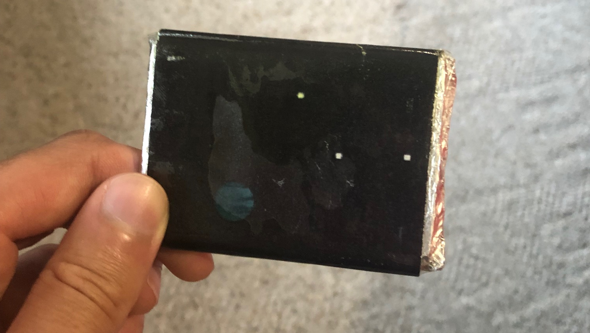

Don't Die Pluto
A symbolic game about destroying the ones you love in pursuit of power. Written in a custom engine, this was available on the Xbox Live Independent Games Marketplace which is no longer up. I've learned a lot since making this and I'm visiting an evolution of this idea with my new project, Adenoid.

The game involved a 2D infinite scrolling universe, where asteroids/planets needed to constantly be shifting into view, and the player could grow to any size. It was a careful balancing act to keep Pluto visible, yet safe from completely dominating the screen. Any generated content needed to be carefully spawned to maintain the illusion that new things aren't coming out of nowhere.

Initially meant as a small weekend-long project, the game went on to be played by some popular YouTubers and even inspired some fanart.
Thought it was a good idea to bundle copies of the game with candy bars. In hindsight including skins and hats for mars would have been a better idea.